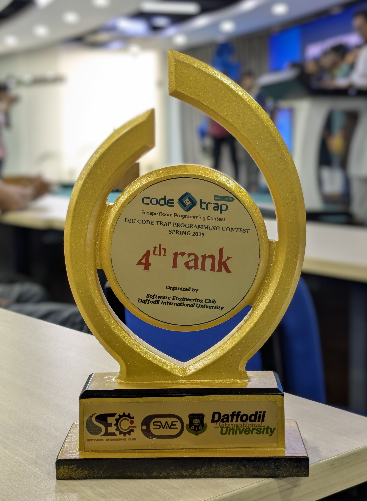

Competitive programming contests are as much about mental clarity and triage as they are about algorithms. You have a ticking countdown, strict time and memory limits, and a problem set designed to bait you into premature optimization.
In Spring 2025, at the DIU CodeTrap Programming Contest organized by the DIU Software Engineering Club, our hard preparation paid off: we solved 6 problems within the window and finished in 4th place. Here is what happened on the contest floor and what worked for us.

1. The First 30 Minutes: Read First, Code Second
The most common mistake junior competitors make is reading Problem A and immediately banging out code. Instead, we followed a disciplined protocol:
- Scan all problem statements quickly to identify standard patterns (two-pointers, binary search, prefix sums, straightforward simulations).
- Tag the "warmup" problems that can be solved and accepted in under 15 minutes to establish momentum on the scoreboard.
- Note constraints carefully: recognizing that $N \le 10^5$ immediately rules out $O(N^2)$ approaches and points straight toward $O(N \log N)$ sorting or hash tables.
2. Handling Edge Cases and Penalty Time
In CodeTrap, penalty time determines rank ties. A wrong submission adds a 20-minute penalty, so sending untested code is costly.
On Problem 4, we encountered a tricky boundary condition with negative values and integer overflow. Before submitting, we wrote a quick stress test covering corner cases:
// Preventing integer overflow on cumulative sums
long long current_sum = 0;
long long max_prefix = 0;
for (int i = 0; i < n; i++) {
current_sum += arr[i];
if (current_sum > max_prefix) {
max_prefix = current_sum;
}
}
// Edge check: when all elements are non-positive
if (all_negative) {
max_prefix = *max_element(arr.begin(), arr.end());
}Catching that edge case offline saved us from a Wrong Answer penalty, which proved decisive in keeping us in the top 5 bracket.
3. The Final Hour Push
With 45 minutes remaining, we had 5 accepted solutions and were locked in a fight for the top spots. The 6th problem was a graph traversal requiring BFS with state tracking.
Instead of overcomplicating with dynamic programming, we simplified the state representation into a compact visited bitmask and pushed the solution. The green "Accepted" verdict lit up with just 12 minutes to spare.
Key Takeaways
- Constraints dictate the algorithm: Never start writing code until you calculate the maximum operations your complexity will perform.
- Write clean, readable variable names: Under pressure, clever one-letter code leads to dumb typos. Meaningful names save minutes.
- Stay calm on the scoreboard freeze: When the scoreboard freezes during the final hour, ignore the rank table and focus solely on the active test runner.
Placing 4th was a proud milestone for me at Daffodil International University. It reinforced my passion for algorithm design, which later inspired me to volunteer as a problem setter and teach programming fundamentals to incoming junior students.